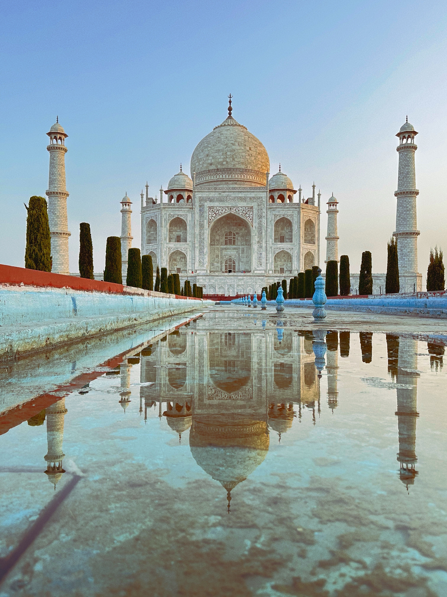

Agra
Monuments and Moonlight
The Taj Mahal and the architectural heritage of Agra, seen through changing light and quiet symmetry.
Reflections in Marble
The still water mirrors the monument’s symmetry, adding another layer of balance to one of India’s most recognizable architectural landscapes.